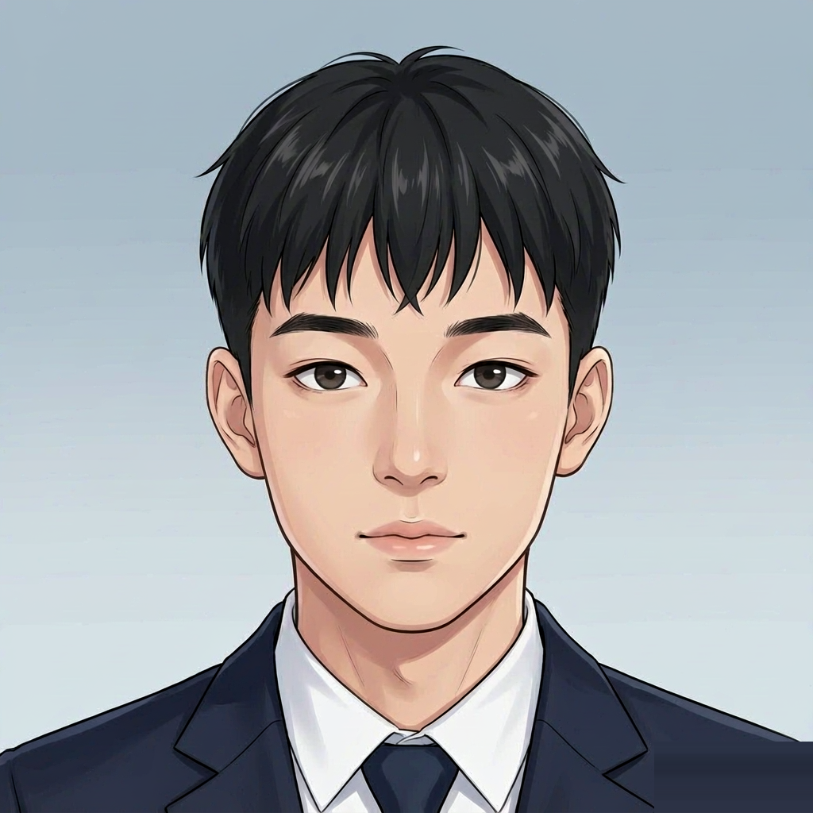

01
+32%
校园洗衣机服务运营与数据分析
独立运营清洗、销售、校园卡代理三条业务线：用 SQL 按月汇总订单、按消费频次做用户分层，用 Excel 透视表定位复购高峰，复购率提升 32%。
代码整理中WJH — Data Analytics · Banking
2028 届校招 · 银行数据分析岗
SQL · MySQL · Excel · Python
专业排名前 3% · 复购率 +32% · 200+ 行建表语句
计算机科学与技术（大数据分析方向）· 本科
2024.09 – 2028.06
课程重心在数据侧：数据库系统与数据结构支撑项目里的建库与查询；三段项目里两段围绕数据建模与业务分析展开。
独立运营清洗、销售、校园卡代理三条业务线：用 SQL 按月汇总订单、按消费频次做用户分层，用 Excel 透视表定位复购高峰，复购率提升 32%。
代码整理中独立完成建库：15 张表、200+ 行建表语句；编写多表连接与按月汇总查询，用视图生成点菜统计报表，覆盖点餐、菜品、结算三类场景。
代码整理中结构体数组管理 100+ 条学生记录，文件读写实现持久化。
独立运营中按周统计订单分布与消费频次
JOIN 与分组聚合，按用户维度统计订单
数据清洗与描述性统计脚本
餐厅点餐系统三类业务实体落表
概念模型到关系模式的转换
结构体数组管理 100+ 条记录，文件持久化
把复购率拆成可追踪字段与周期口径
复购率、客单价、频次的周期性对比
按银行数据岗 JD 梳理 AUM、不良率、客均产品数等口径
独立完成点餐系统需求分析与建模
院男篮队长，训练与赛事统筹
与场地、供应商、用户对接日常运营
以上为课程与项目中的实际使用范围；未列出的工具仍在学习中。
我的数据分析是从一线业务里长出来的。2025 年 9 月起自己在校内做洗衣服务，清洗、销售、校园卡代理三条线都要记流水；为了搞清楚谁在复购、什么时候该调价，才开始用 SQL 按月汇总、用透视表找高峰——不是为了做项目而做项目。
课程里的训练偏工程侧：点餐库从需求、E-R 建模到多表查询和统计视图全部独立完成，写建表语句时就开始考虑字段口径和索引怎么留。
目前用公开银行营销数据集做客户画像与转化率分析练习：清洗数据、按职业与年龄段分层、比较不同客群的认购率差异，整理成可复现的 notebook。

微信 / 电话：邮件联系后提供
深圳 / 广州可到岗